- PitBoard
- Documentation
PitBoard documentation
Everything you need to run PitBoard at an event: installing it, setting up the pit laptop, connecting your team's phones and using every part of the screen.
Overview#
PitBoard has two parts:
- The Windows app runs on the pit laptop. It shows your next match, your alliance partner, all of your matches and a pre-match checklist, using live data from the FTC Events API.
- The Android app runs on each team member's phone. When the pit needs someone, the laptop makes their phone ring at full volume, even when it's locked or on silent.
The laptop is the server. Phones connect straight to it with an address and a join code. There are no accounts and nothing in the cloud.
Note
Any FTC team can use PitBoard. Nothing team-specific is built in: you enter your own team number on the laptop, and each phone enters your laptop's address and join code.
Install on the laptop#
PitBoard runs on Windows 10 or 11 (64-bit).
Download the installer from the download page.
-
Open PitBoard-Setup-Windows.exe. You can choose where to install it.
Windows protected your PC
The installer isn't code-signed yet, so Windows SmartScreen may stop it. Click More info, then Run anyway.
Start PitBoard from the Start menu or the desktop shortcut.
The first time PitBoard starts, Windows Firewall may ask whether PitBoard can use the network. Allow it, so phones on the same Wi-Fi can connect.
First launch#
On first launch the Settings window opens by itself. The only thing you have to fill in is your team number.
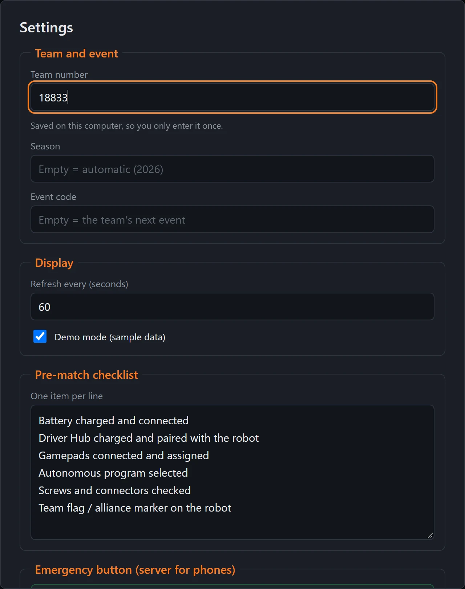
1Your team number 2Season (optional) 3Event code (optional) 4Sample data 5One item per line- Team number. Your FTC team number. It's saved on the laptop, so you only enter it once.
- Season. Leave it empty and PitBoard uses the season FTC calls current. See Event code and season.
- Event code. Leave it empty and PitBoard finds your team's current or next event. To choose the event yourself, see Event code and season.
- Demo mode. Shows sample data, so you can try PitBoard before an event. Turn it off for real data.
- Pre-match checklist. Your team's checklist, one item per line. See Pre-match checklist.
Click Save. PitBoard loads your event and the dashboard appears. Press F11 to switch full screen on and off.
Tip
The settings window also has Refresh every (seconds), which sets how often PitBoard checks FTC for new results. The default is 60 seconds.
Event code and season#
Most of the time you can leave Season and Event code empty. Fill them in when PitBoard shows the wrong event, for example when your team is signed up for more than one, or when you want to follow a specific event.
-
Open your team's page on FTC Events. Go to
ftc-events.firstinspires.org/2025/team/followed by your team number, for example ftc-events.firstinspires.org/2025/team/18833. It lists your team's events for that season. -
Click your event. The address of the event page holds both values you need:
- Season. The year the season starts: the 2025–2026 season is
2025. - Event code. The letters and digits after the season, here
ILGBQ3.
- Season. The year the season starts: the 2025–2026 season is
-
Enter them in PitBoard. Open Settings, type the season in Season and the code in Event code, then click Save.
Note
Clear both fields again after the event, so PitBoard goes back to finding your team's next event by itself.
The dashboard#
This is the main screen. Leave it open on the pit laptop for the whole event.
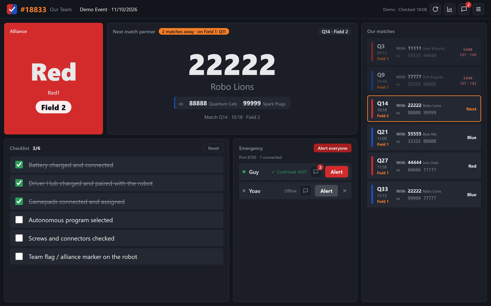
1 2 3 4 5 6- Alliance. Your color, station and field for the next match, in type you can read from across the pit.
- Next match partner. Your partner's number and name, your opponents, and a countdown such as 2 matches away, with the match being played right now.
- Our matches. Every match you have at the event, with partner, opponents, field and result. The next one has an orange outline.
- Checklist. The pre-match checklist. Tap items as you do them.
- Emergency. The phones that are connected, each with an Alert button.
- Toolbar. Refresh, scouting, chat and settings.
Fields and the match being played
At events with more than one field, every match shows which field it's on: in the alliance box, the next match header, each row of the match list and the match warning. At single-field events the field isn't shown.
While one of your matches is being played, the next match panel adds a Playing now line with that match, its color and its field.
Toolbar#
The buttons at the top right of the dashboard. The text next to them says when PitBoard last checked FTC for new data.
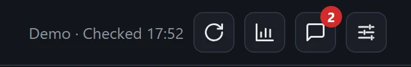
1 2 3 4Pre-match checklist#
The checklist is the list of things your team checks before every match. Click an item to tick it. The counter, for example 3/6, shows how many are done.
- It clears itself whenever the next match changes, so each match starts with an empty list.
- Reset clears it by hand.
- To change the items, open Settings and edit Pre-match checklist, one item per line.
Match warning#
When only two matches are left before yours, PitBoard warns the pit, once per match:
- a full-screen alert in your alliance color, with sound
- a flashing taskbar button, if PitBoard isn't the window in front
- a Windows notification
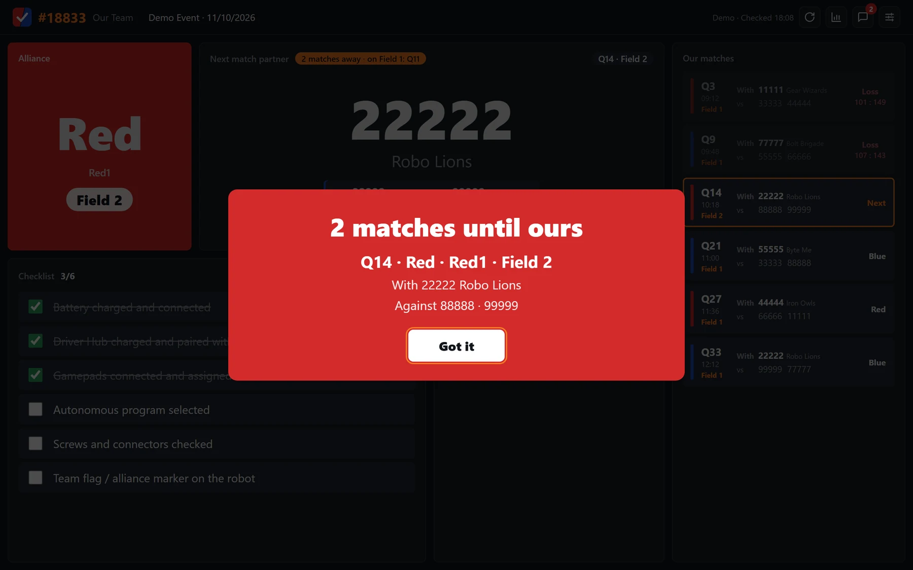
1Stops the sound- Got it closes the warning and stops the sound.
Scouting#
Team stats come from FTCScout. No account is needed.
- Any team number on the screen can be clicked. It shows that team's np OPR, Auto OPR, Teleop OPR, np average and ranking, at this event and for the season, plus its season match history grouped by event.
- The scouting button in the toolbar opens a table of every team at the event. Sort it by ranking, np OPR, Auto OPR, Teleop OPR or np average, and switch between This event and Season.
Note
FTCScout adds each new game some time after the season starts. Until then PitBoard shows the latest season FTCScout has, and says so.
Phone server settings#
Phones connect to the laptop. Everything they need is at the bottom of the Settings window, under Emergency button (server for phones).
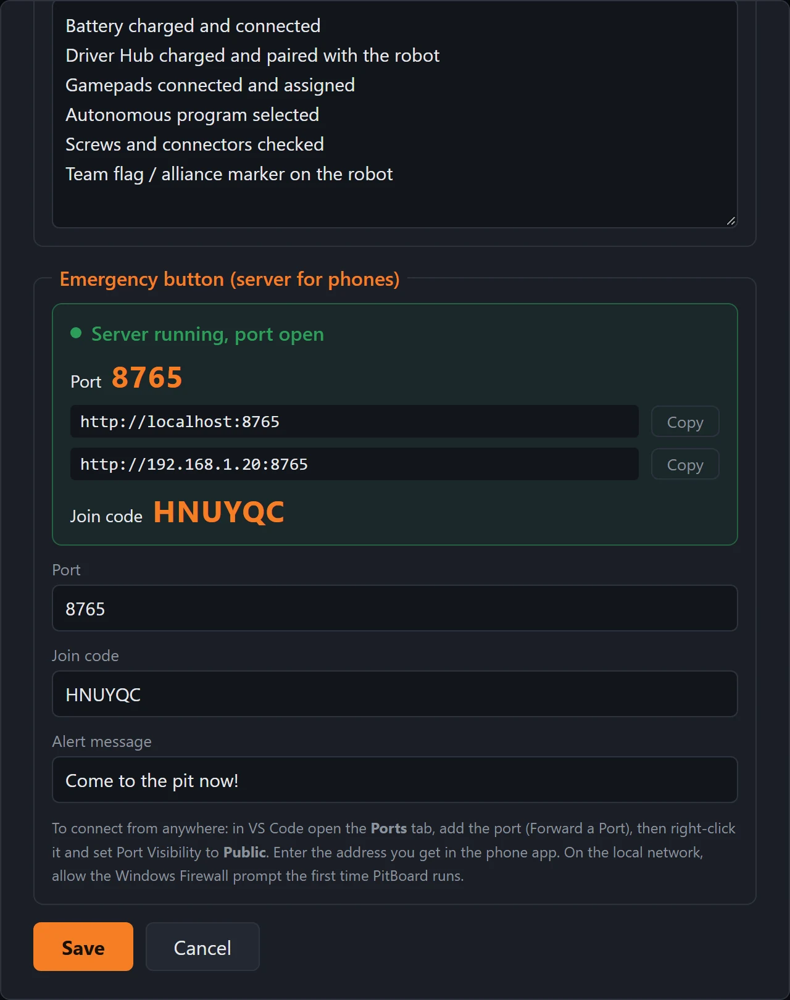
1Green: ready 2Phone address 3Join code 4Change or clear the code 5Text on the phone 6Save- Status. Server running, port open in green means phones can connect.
- Addresses. The addresses phones can use on the same Wi-Fi as the laptop. Copy copies one. Ignore
localhost, which only works on the laptop itself. - Join code. Phones must enter this code. PitBoard creates a random one the first time it runs.
- Join code field. Change the code here, or clear it to let phones connect without one.
- Alert message. The text the phone shows when you press Alert.
- Save applies the changes.
The port is 8765 unless you change it. Change it only if another program already uses that port.
Connecting phones#
There are two ways for a phone to reach the laptop.
On the same Wi-Fi
If the phones and the laptop are on the same network, give the phones the local address from the settings window, for example http://192.168.1.20:8765. This works without internet.
Wi-Fi blocking it?
Venue and school Wi-Fi often stop devices from reaching each other. Turn on a hotspot on one phone and connect the laptop and the other phones to it. The laptop gets a new local address on the hotspot, so copy it again from the settings window.
From anywhere
Venue Wi-Fi often blocks devices from reaching each other, and phones on mobile data aren't on the laptop's network at all. VS Code can give the laptop a public https:// address that works from anywhere. See Port forwarding.
Port forwarding#
VS Code's built-in port forwarding creates a secure tunnel to PitBoard's phone server on port 8765 and gives it a public web address. No router setup is needed.
Before you begin
- A recent version of Visual Studio Code on the pit laptop.
- A GitHub account. VS Code asks you to sign in the first time you forward a port.
- PitBoard running on the laptop. Its phone server settings should say Server running, port open.
Note
The address only works while VS Code is open and PitBoard is running. Closing VS Code stops the tunnel.
-
Open VS Code. Any folder or project can be open; port forwarding works the same way.
-
Open the Command Palette. Press Ctrl+Shift+P (or F1). If you've forwarded a port before, Forward a Port may already be at the top of the list.
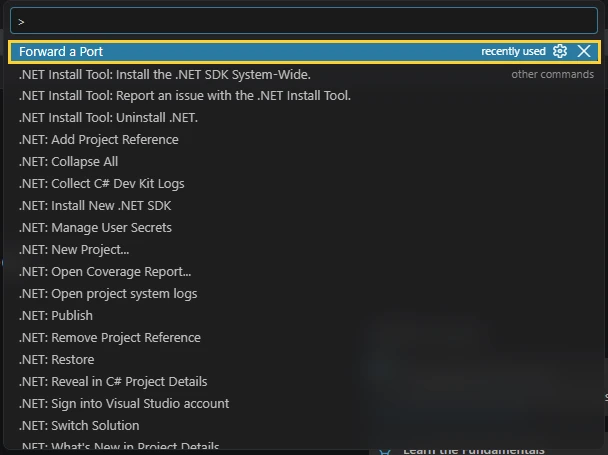
The Command Palette with Forward a Port highlighted -
Run Forward a Port. Type
forward a portto filter the list, select Forward a Port and press Enter.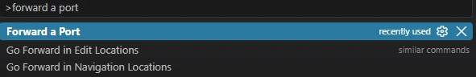
Searching for the command -
Enter the port number. Type
8765and press Enter. The Ports panel opens at the bottom of the window.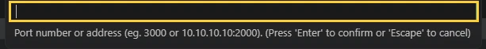
The port number prompt Another way
Skip the Command Palette: open the Ports tab in the bottom panel, click Forward a Port, and type
8765straight into the Port column.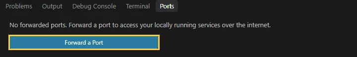
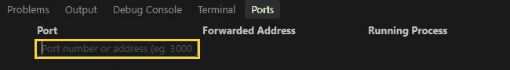
The Forward a Port button, and typing the port in the Port column -
Check that the port is forwarded. If asked, sign in with GitHub and allow access. After a moment, port
8765appears in the Ports panel with a forwarded address. Its visibility starts as Private, which means only you can open it after signing in, so phones can't connect yet.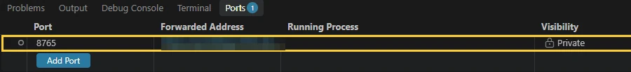
1 2 3Port 8765 forwarded, still Private. The address is blurred here. - Port 8765, PitBoard's phone server.
- Forwarded address. The public address for the phones.
- Visibility is Private, shown with a lock.
-
Make the port public. Right-click the row for port
8765, choose Port Visibility, then Public. The Visibility column changes to Public with a globe icon.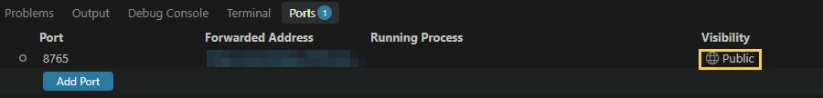
1 2Visibility changed to Public - Forwarded address. Copy this in the next step.
- Public. Phones can now connect without signing in.
Warning
Anyone who has a public address can open it, with no sign-in. Keep a join code set in PitBoard so only your team's phones get in, and set the port back to Private or stop forwarding when the event is over.
-
Give the address to the phones. Hover over the forwarded address and click the copy icon, or right-click the port and choose Copy Local Address. Each teammate enters this
https://address as the Server address in the phone app, with the join code. See Phone setup.To stop sharing, right-click the port and choose Stop Forwarding Port.
If it doesn't work
| Problem | What to check |
|---|---|
| Test connection fails | PitBoard must be running on the laptop. The Running Process column stays empty when nothing is listening on port 8765. |
| The phone asks for a sign-in | The port is still Private. Repeat step 6. |
| No Public option | Your account or organization may not allow public ports. Try another GitHub account, or connect over the same Wi-Fi. |
| It stopped working | VS Code was closed or the laptop went to sleep. Open VS Code and forward the port again. If the address changed, enter the new one on the phones. |
Pit alerts#
The Emergency panel lists every phone that has connected. Press Alert and that phone rings at full volume, vibrates and shows a red full-screen message, even when it's locked or on silent.
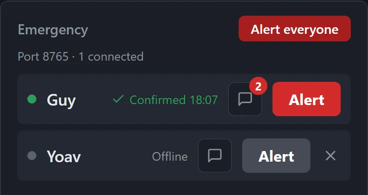
1 2 3 4 5 6- Alert rings that person's phone.
- Alert everyone rings every connected phone at once.
- Status. Sent with the time, then Confirmed once the person taps "Got it, on my way!" on the phone.
- Chat opens a conversation with that phone. The red number counts unread replies.
- Offline. A grey dot means the phone isn't connected right now, so it can't be alerted.
- Remove. The × removes an offline phone from the list.
What happens on the phone
- The alarm volume goes to maximum for the ring, and back to normal afterwards.
- It rings and vibrates for up to two minutes. If nobody confirms, it stops but the notification stays.
- A new alert while one is ringing replaces it.
Chat#
Open the chat from the toolbar, or with the small chat button next to a phone in the Emergency panel.
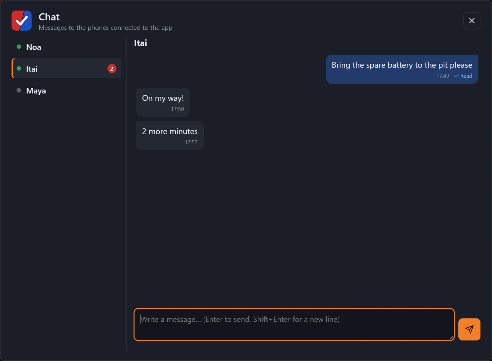
1 2 3 4 5- People. Pick who to write to. A green dot means they're connected.
- Your message. Its status shows Waiting, Delivered or Read.
- Replies from the phone.
- Message box. Enter sends, Shift+Enter adds a new line.
- Send.
- Offline phones. Messages to a phone that's offline wait, and go out when it reconnects.
- New replies show as a badge and play a short sound, plus a Windows notification when PitBoard isn't in front.
- History on the laptop is kept until PitBoard is closed.
Install on a phone#
The phone app needs Android 8.0 or newer. It isn't on Google Play, so you install the APK file directly.
On the phone, open the download page and tap Download APK.
Open the downloaded file. Android asks once to allow installs from your browser. Allow it.
Tap Install, then Open.
Note
The phone app's screens are in Hebrew.
Phone setup#
On first launch the app opens its settings screen. Copy the values from the laptop's phone server settings.
| Field | What to enter |
|---|---|
| Server address | On the same Wi-Fi, the local address, like http://192.168.1.20:8765. From anywhere, the forwarded address, like https://abcd1234-8765.euw.devtunnels.ms. You can leave out https://. |
| Name | Your name as it should appear on the laptop, up to 40 characters. |
| Join code | The join code from the laptop. Leave it empty if the laptop has none. |
Tap Test connection. It should answer that it's connected to your team's server.
Save, then turn on Pit connection. Your name appears on the laptop within a few seconds.
Tap Test ring to hear the alert and check that the red screen appears.
Permissions#
The app's settings list anything still missing, each with a button that opens the right system screen.
| Permission | Why it's needed |
|---|---|
| Notifications | The alert is a notification. Without it the phone may ring, but nothing shows on the screen. |
| Full-screen alerts | Android 14 and newer. Lets the red alert screen open over the lock screen. |
| Battery: unrestricted | Otherwise Android may cut the connection while the screen is off, and the alert never arrives. |
| Do Not Disturb access | Optional. The alert already rings through silent and vibrate mode. With this, it also rings through total silence. |
Some phones need more
- Xiaomi: turn on Autostart for PitBoard.
- Samsung: add PitBoard to Never sleeping apps.
- Huawei: set PitBoard to Manage manually, then allow Run in background.
Phone tabs#
The bar at the bottom of the phone app has four tabs:
| Tab | Shows |
|---|---|
| Scout | Every team at the event with np OPR, Auto OPR, Teleop OPR, np average and rank. Tap a column header to sort, again to reverse. |
| Matches | All of your team's matches, with alliance color, partner, opponents and score. The next match is outlined. The app opens on this tab. |
| Chat | The conversation with the pit, with quick replies such as On my way! and 2 more minutes. |
| Settings | Connection status, the on/off switch, test ring, permissions and Edit settings. |
Tap any team in Scout or Matches to see its whole season. Pull down on either tab to refresh. These tabs need internet on the phone.
Troubleshooting#
The phone can't connect
- Check that the settings window on the laptop says Server running, port open, and that the phone's join code matches.
- With a local address (
http://192.168.…), the phone and the laptop must be on the same network, and Windows Firewall must allow PitBoard. - With port forwarding (
https://…devtunnels.ms), they don't need to be on the same network. The phone can use any Wi-Fi or mobile data. Check that the port's visibility is Public; see Port forwarding: if it doesn't work. - The Wi-Fi may be blocking it. Venue and school networks often block devices from reaching each other, and some block the tunnel too. Connect the laptop to a phone's hotspot and try again. On the hotspot, phones connected to it can use the laptop's new local address, and port forwarding works for everyone else.
"Wrong join code"
The code on the phone doesn't match the laptop. Copy it again from the laptop's settings window. Letters can be typed in upper or lower case.
The alert doesn't ring when the screen is off
Set the app's battery use to Unrestricted, and on Xiaomi, Samsung and Huawei phones do the extra step in Permissions. Then use Test ring.
No match data
- The laptop needs internet to reach the FTC Events API. Alerts and chat still work without it.
- If PitBoard picks the wrong event, enter the Event code in Settings.
- Turn on Demo mode to check that everything else works.